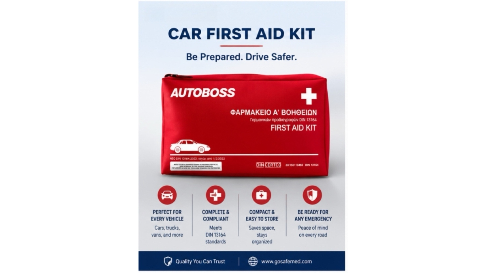

Importing Vehicle First Aid Kits into Europe? Here's What Buyers Often Overlook
JUL 13, 2026

A few months ago, I was speaking with a customer who had already compared several suppliers.
The prices looked similar.
The product photos looked similar.
Even the product descriptions looked similar.
Then he asked me a question I hear surprisingly often:
“Apart from price, what should I really be comparing?”
It's a great question.
Because in B2B procurement, the biggest costs often don't appear on the quotation sheet.
They're discovered weeks—or even months—after the order has been placed.
Here are a few things experienced importers usually pay attention to.
1. A Competitive Price Doesn't Always Mean Lower Cost
Everyone compares prices.
That's normal.
But experienced buyers also compare what happens after the products arrive.
For example:
- Will the shelf life leave enough time for distribution?
- Will replacement products be easy to source later?
- Is the packaging suitable for retail display?
- Are product specifications clearly documented?
Sometimes a product that's $1 cheaper ends up costing much more in customer service, inventory management or future replacements.
2. Packaging Is More Important Than Many Buyers Think
Packaging isn't just about appearance.
It affects transportation, storage and even how customers perceive product quality.
Some buyers ask questions like:
- Can the packaging withstand long-distance shipping?
- Is private labeling available?
- Can product labels be adapted for different markets?
- Will retail customers immediately understand what's inside?
Small packaging decisions can make a surprisingly big difference later.
3. Delivery Time Can Affect More Than Your Inventory
Many importers focus on production lead time.
But they sometimes overlook their own customers' schedules.
Imagine you're supplying:
- an automotive distributor preparing for a seasonal promotion,
- a fleet customer replacing expired kits,
- or a company bidding for a government project.
A delayed shipment doesn't just affect your warehouse.
It may affect your customer's entire plan.
That's why experienced buyers usually ask about production schedules early in the discussion—not after the purchase order has been issued.
4. What Happens After the Sale?
One question I always encourage buyers to ask is:
“If my customer has a question six months from now, will my supplier still be there?”
This sounds simple.
But it's often overlooked.
Reliable suppliers don't disappear once the container leaves the factory.
They continue supporting documentation requests, product updates, replacement components and future projects.
That ongoing support can be just as valuable as the product itself.
5. Choose a Supplier, Not Just a Product
In today's market, many vehicle first aid kits look similar.
The real difference is often the people behind them.
When problems arise—and in international trade, they sometimes do—you want a supplier who communicates clearly, responds promptly and genuinely wants your project to succeed.
Procurement Reminder
Before making your final decision, try asking each supplier these three questions:
| Question | Why It Matters |
|---|---|
| How do you support customers after delivery? | Long-term cooperation matters. |
| Can you help with OEM or future product upgrades? | Supports business growth. |
| If my customer has technical questions, can I rely on your team? | Saves time and builds confidence. |
The answers often tell you much more than the quotation itself.
How GoSafeMed Works With Importers
At GoSafeMed, we understand that our customers are building relationships with their own customers.
That's why we focus not only on supplying products, but also on providing practical support throughout the procurement process—from product selection and OEM discussions to documentation and project communication.
Our goal is simple:
To make importing vehicle first aid kits a little easier, and a little more predictable.
Final Thoughts
The best purchasing decisions are rarely based on price alone.
They're based on confidence.
Confidence that the products will arrive as expected.
Confidence that your supplier will support you.
And confidence that your customers will receive exactly what they need.
Sometimes, those are the things buyers overlook first—but appreciate the most later.